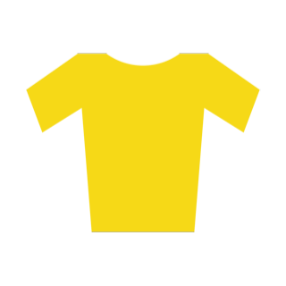
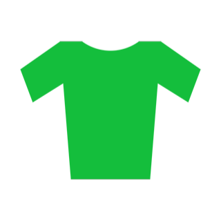

Pravidla závodu
Klasicky závodíme ve třech soutěžích, jejichž vítězové budou navždy nezapamatovatelně zapsáni v našich análech. Letos přicházíme i s jednou formální novinkou - budeme mít i menší várku dresů, tak v tom nebudete aspoň vlát jak v pyžamech!
Žlutý trikot

Ve žlutém trikotu jezdí průběžně první závodník celkové klasifikace. Slavnostní převlékání dresů bude probíhat při večerním ceremoniálu za obdivných uznání všech přítomných (bude samozřejmě vysíláno i online, abyste mohli posílat srdíčka, to je snad jasný). Na závodníka ve žlutém by se nemělo útočit v nefér situacích (třeba defekt, defekace aj.), ale nikdo to kontrolovat nebude. Závodník ve žlutém má právo na objednávku pikolíčka jako první.
Zelený trikot

Na jednotlivé etapy je vypsáno několik sprinterských prémií (body jsou udělovány i prvním jezdcům v cíli). Průběžně vedoucí závodník je pak opět vyhlášen na večerním ceremoniálu. Zelený dres není tak hezký jako žlutý, takže není třeba se kvůli němu pozabíjet při sprintech proti protijedoucímu kamionu apod. Jezdec v zeleném pravidelně dojíždí v kopcovitých etapách do cíle až daleko za těmi nejlepšími, a tedy i bez velkého zájmu fanoušků a médií (přesto ho ale vyhlašujeme, když už jsme ten dres koupili).
Puntíkatý trikot

V průběhu celého závodu je vypsáno i několik vrchařských prémií různých kategorií (Hors catégorie je nejvyšší kategorie stoupání na G tour a je takzvaně "mimo kategorii", což dává smysl). Čím těžší kopec, tím více bodů závodník získá - tedy pouze v případě, že dojede na bodovaném místě. Puntíkatý dres je nádherný (má puntíky!) a je taktéž předáván při večerní ceremonii. Ten, kdo nemá na to vozit dres žlutej, tak samozřejmě touží aspoň po puntíkách.
Závodíme fair play! Tak určitě.
Při závodě bude kladen důraz na několik klíčových parametrů, které byly direktoriátem stanoveny následovně: (1) Férovost - ve smyslu jasně definovaných bodů a úseků, kde se závodí a kde ne, aby už nedocházelo k vágním formulacím typu "dolů jede každý jak může, ale nezávodí se", případně "nahoru jede každý, jak nemůže", které svádí k různým výkladům a následně i zmatkům, které následně vedou k nevraživosti mezi týmy i samotnými závodníky. Lepit to totiž za vás, holenkové, nikdo nebude! (2) Vyváženost - ve smyslu trasy, která se snaží dát prostor všem cyklistickým dovednostem a krásám jako jsou vrchařina, sprinteřina, sjezdařina, ale i jízda v grupetu tzv. na pohodu a kochačku, při které se nikdo nikam nežene a je čas pokecat a užít si to, aniž by kdokoliv riskoval ztrátu na případné konkurenty v pořadí. Jde tedy o to, aby během závodu nenastala nechtěná aviváž, při které by samotná trať stranila některému ze závodníků. Zejména nesmí být straněno závodníkům krásným. (3) Bezpečnost - peloton se rozrůstá a je třeba pečlivě přemýšlet nad tím kudy projíždíme, kde zastavujeme a kde chčijeme. Zkrátka, kde závodíme jako blázni (díky Bohu!), a kde by jakýkoliv závodění byla totální píčovina. I tak apelujeme na všechny účastníky - dávejte na sebe pozor ... je to trochu zázrak, že se zatim ještě nikdo nezrakvil. A hlavně pamatujte, štěrk v zatáčkách kvůli vám nikdo před etapou uklízet nebude, to si nemyslete! (4) Atraktivita - věříme, že letos opět klapne počasí a čeká nás spektakulární zážitek. Nejdůležitějším bodem našeho Fair play desatera o čtyřech bodech je ale vypadat při závodě krásně a tak, aby naše ochlupená lýtka neunikla pohledu žádné fanynky ani fanynka. Jen tato atraktivita dělá náš závod tím nejlepším závodem mezi všemi závody. Amen. Dále pouze heslovitě: - ne na každé prémii bude přítomen rozhodčí, takže bude nutno spolupracovat a pořadí si zapamatovat. - závodíme za plného silničního provozu, nutno dbát zvýšené opatrnosti, hlavním cílem je dojet živí a v pořádku - na každé etapě bude několik povinných přestávek - občerstvení dle nálady (pivko, pikolíčko, zákuseček, prejt). Při těchto přestávkách je zastaven závodní čas a po ukončení se bude vyjíždět v intervalech, ve kterých se přijelo (v některých vyjímečných případech se bude ale vyjíždět hromadně, aby to nebylo tak jednoduchý) - vyhlášení výsledků jednotlivých etap bude co nejdříve po dokončení etapy (potom co uschnou dresy po předchozích majitelích) - slavnostní ceremoniál proběhne po dojetí poslední etapy v Mašově.